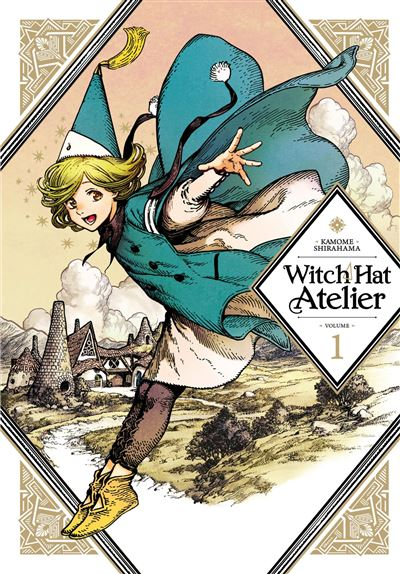

Series (anime) bekijken
Ik ben dol op Japanse media zoals anime. More specifically vind ik animes over eten en koken het leukste! :P
Voor anime raad ik zeker Witch Hat Atelier aan! Het heeft DE mooiste artstyle en verhaal over magie, de anime is vooral gewoon een KUNSTWERK